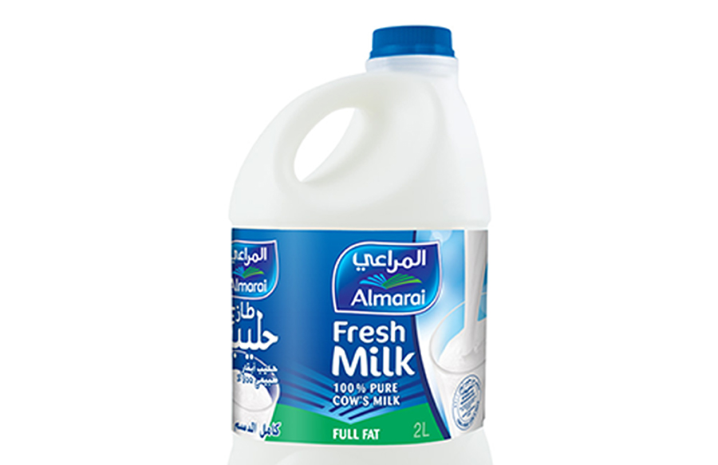

<ion-header class="parallax-obj parallax-translate-obj header-transparent">
    <ion-toolbar>
        <ion-searchbar (keydown)=onKeydownEvent($event)></ion-searchbar>
    </ion-toolbar>
</ion-header>
<ion-content padding fullscreen common-parallax [scrollEvents]="true">
    <ion-card class="sc-ion-card-ios-h sc-ion-card-ios-s ios hydrated mgb-30" style="display: none" id="milk">
        
        <ion-card-header class="ios hydrated">
            <ion-card-subtitle role="heading" aria-level="3" class="ios hydrated">58 Cal per 100ml</ion-card-subtitle>
            <ion-card-title role="heading" aria-level="2" class="ios hydrated">Almarai Milk Full Cream</ion-card-title>
        </ion-card-header>
        <ion-card-content class="ios card-content-ios hydrated">
            One cup (240 ml) of whole cow’s milk with 3.25% fat provides
            Calories: 149
            Water: 88%
            Protein: 7.7 grams
            Carbs: 11.7 grams
            Sugar: 12.3 grams
            Fiber: 0 grams
            Fat: 8 grams
            <ion-button color="primary">Buy it</ion-button>
            <span class="fs-22 mgl-5 custom-postion">9 SAR</span>
        </ion-card-content>
    </ion-card>
</ion-content>